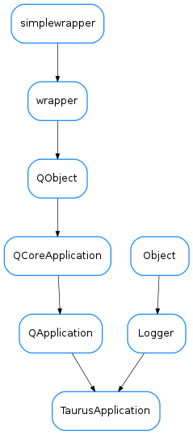

TaurusApplication¶

-
class
TaurusApplication(*args, **kwargs)[source]¶ Bases:
PyQt4.QtGui.QApplication,taurus.core.util.log.LoggerA QApplication that additionally parses the command line looking for taurus options. This is done using the
taurus.core.util.argparse. To create a TaurusApplication object you should use the same parameters as in QApplication.- The optional keyword parameters:
- app_name: (str) application name
- app_version: (str) application version
- org_name: (str) organization name
- org_domain: (str) organization domain
...And at last the ‘cmd_line_parser’ which should be an instance of
optparse.OptionParser. Simple example:import sys import taurus.qt.qtgui.application import taurus.qt.qtgui.display app = taurus.qt.qtgui.application.TaurusApplication() w = taurus.qt.qtgui.display.TaurusLabel() w.model = 'sys/tg_test/1/double_scalar' w.show() sys.exit(app.exec_())
A more complex example showing how to add options and a usage help:
import sys import taurus.core.util.argparse import taurus.qt.qtgui.application import taurus.qt.qtgui.display parser = taurus.core.util.argparse.get_taurus_parser() parser.usage = "%prog [options] <model>" parser.add_option("--hello") app = taurus.qt.qtgui.application.TaurusApplication(cmd_line_parser=parser) args = app.get_command_line_args() if len(args) < 1: sys.stderr.write("Need to supply model attribute") sys.exit(1) w = taurus.qt.qtgui.display.TaurusLabel() w.model = args[1] w.show() sys.exit(app.exec_())
For more details on taurus command line parsing check
taurus.core.util.argparse.-
basicConfig(log_file_name=None, maxBytes=10000000.0, backupCount=5, with_gui_exc_handler=True)[source]¶
-
get_command_line_args()[source]¶ Returns the list of arguments that resulted from parsing the command line parameters.
Returns: the command line arguments Return type: list of strings
-
get_command_line_options()[source]¶ Returns the
optparse.Optionthat resulted from parsing the command line parameters.Returns: the command line options Return type: optparse.Option
-
get_command_line_parser()[source]¶ Returns the
optparse.OptionParserused to parse the command line parameters.Returns: the parser used in the command line Return type: optparse.OptionParser